Voici une acquisition sur Ebay que je viens de faire!!! WOW!!
La société Lambda Physik AG a été racheter le 21 janvier 2004 par la société Coherent. Ces lasers sont maintenant produit sous la désignation LPXpro et ont étés améliorés par des modifications comme :
-La préionisation qui est maintenant du type corona donc moins de pollution dans la cavité de décharge donc durée de vie du mélange gazeux prolongé.
-Montage des miroirs à l'extérieur du tube de décharge donc pas de pollution de ceux-ci par des débris.
-Suppression du thyratron à hydrogène très couteux qu'il faut remplacer régulièrement par un système MSC (Magnetic Switch Control) permettant de travailler avec des IGTB à 2kV!
-Tube de décharge en céramique et métal ce qui évite toute corrosion et augmente la durée de vie du gaz.
-Augmentation de la fréquence de répétion à 200 pps ce qui donne une puissance moyenne de 100W !
Pour moi la première étape consiste à démonter entièrement le laser pour vérifier et nettoyer les pièces intra-cavité.
Puis si tout est en ordre je vais monté une optique permettant de travailler avec un mélange N2-He à 337.1 nm, d'après la fiche technique une énergie de 16mJ par pulse en 6ns soit une puissance crête de 2.6 MW parfaitement adapté pour le pompage des lasers à colorants avec un rendement de 50% !
Une deuxième étape consistera à mettre une optique pour travaillé avec un mélange de CO2/N2/He pour émettre à 10.6 microns avec une énergie de 6J par pulse en 1000ns soit une puissance crête de 6MW avec une fréquence de répétition de 25 pulse par seconde.
La troisième étape consistera de travailler avec le mélange excimer ArF ou KrF cela dépendra du prix des gas. Le mélange d'halogène se compose de 5% de Fluor et de 95% d'hélium.
Voici la vue intérieur d'un laser excimer EMG 100 ayant une énergie de sortie de 250mJ en KrF. Le circuit de décharge est une ligne de Blumlein modifiée composé d'une inductance non linéaire servant de compresseur de pulse
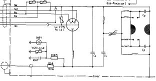
Les condensateurs de stockage Cs sont en titanate de baryum pour le modele EMG50 et EMG100 et des condensateurs en Mylar (Maxwell) pour le modele EMG201C
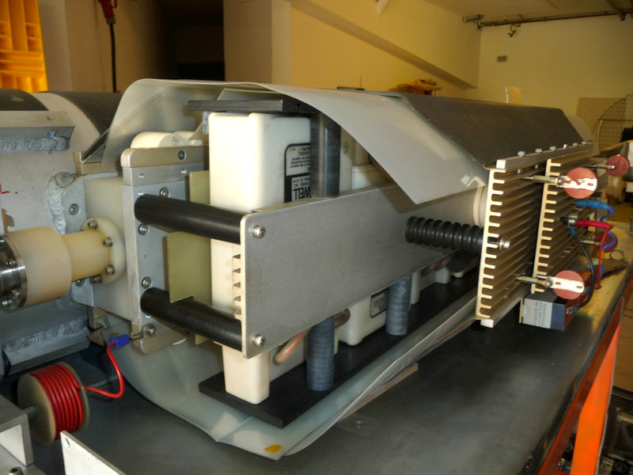
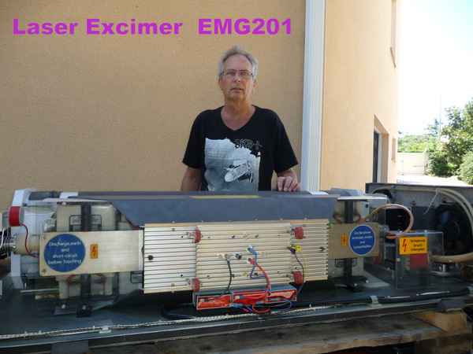
Voici le MONSTRE !
Poids 260 kg 170cm x 70cm x 35cm capable de sortir 1J à 40pps en KrF (249nm) et 600mJ en XeCl (308nm) pour le pompage de laser à colorant. Avec une optique IR on peut travailler avec un mélange CO2/N2/He à 10.6 microns avec une énergie par pulse de 6 Joules.
Ce laser est le plus puissant des lasers à excimer vendu dans le commerce. Le prix en 2001 était de 125'000 euro !
Je l'ai obtenu par un ferrailleur en allemagne.
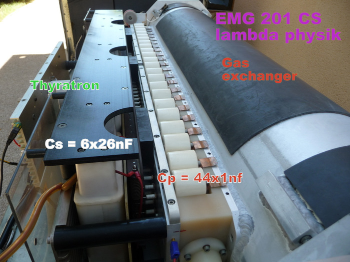
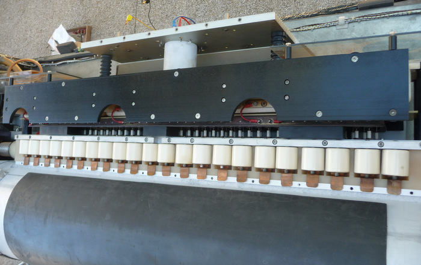
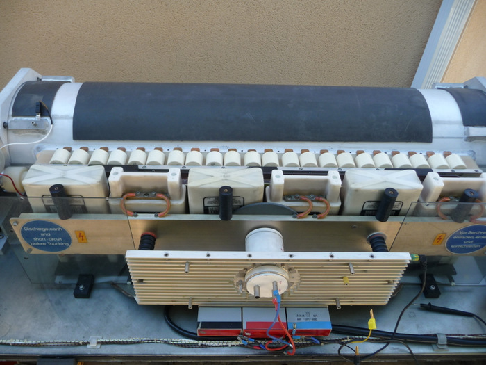
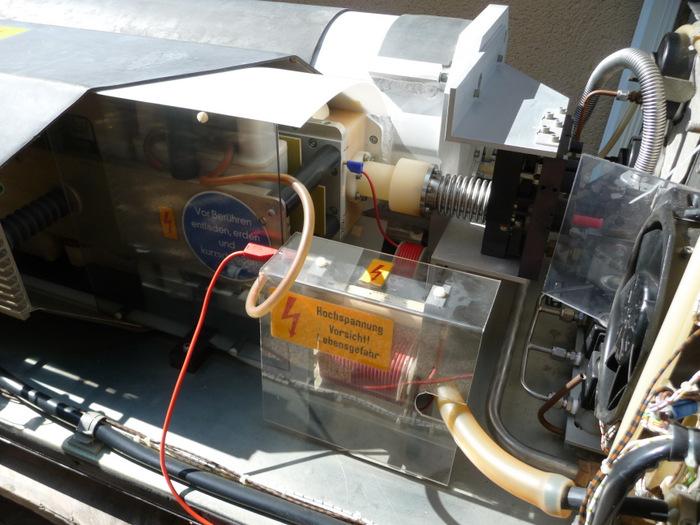
Le circuit de décharge se compose de 6 condensateurs de stockage MAXWELL 26nF 50kV qui se décharge au moyen d'un thyratron à hydrogène dans 44 condensateurs en titanate de baryum de 1nF 50kV à travers 44 selfs montées sur les électrodes de pré-ionisation. Une fois la tension de décharge atteinte entre les 2 électrodes de décharge ces 44 condensateurs se décharge avec une inductivité minimum en 10 nanosecondes dans le mélange de gaz. Le volume de gaz dans l'enceinte est de 56 litres de mélange gazeux soit 80 torr d'un mélange de 5% HCl et 95% He , de 60 torr de Xe, 1110 torr d'argon 99,995; Le thyratron à hydrogène est un modele LP289 de Lambda Physik (courant chauffe typique 13A et courant réservoir 3.5A sous 6.3V), tension trigger +350V et bias grille -130V
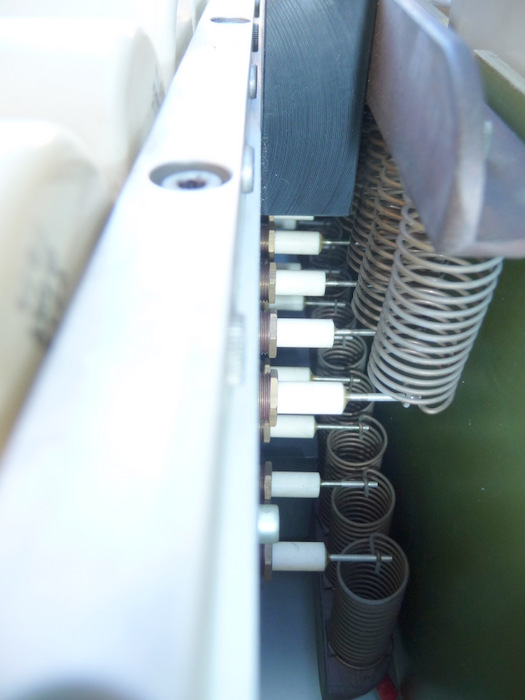
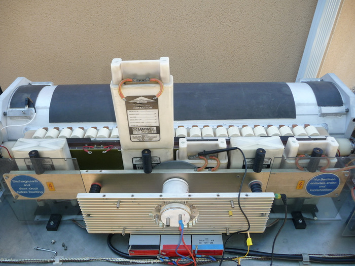
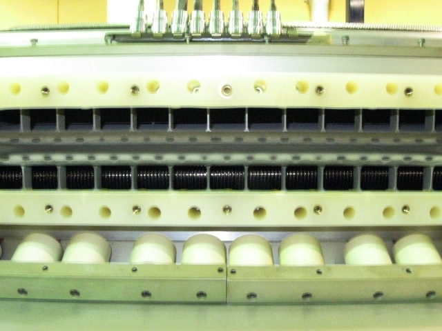
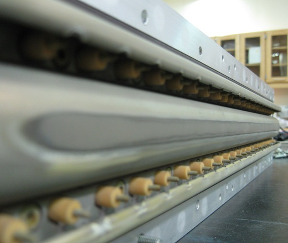
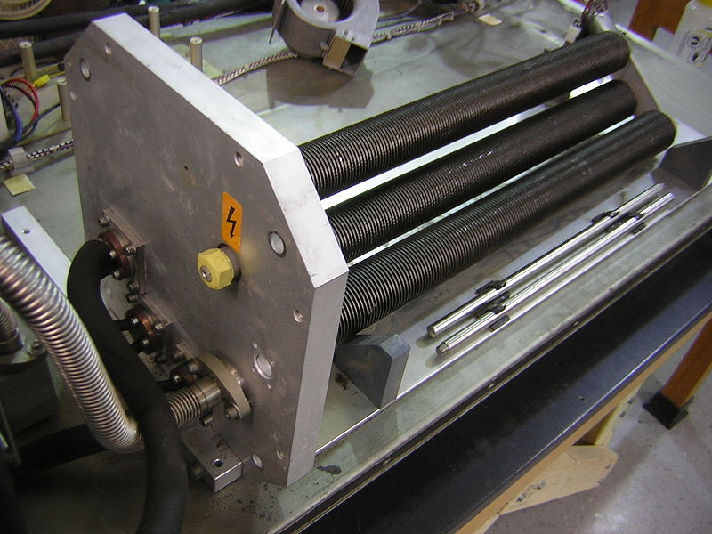
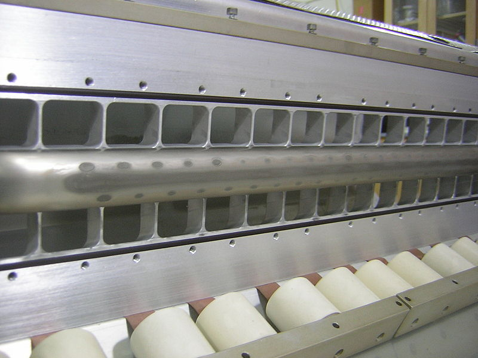
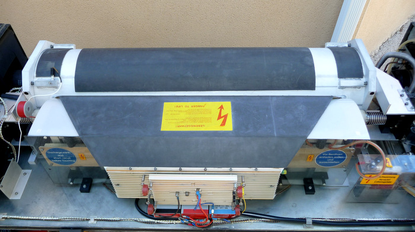
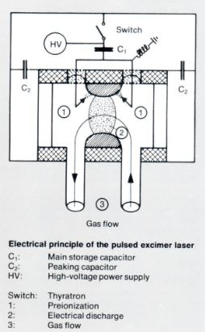
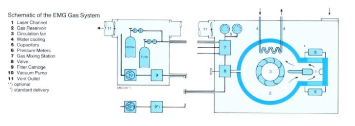
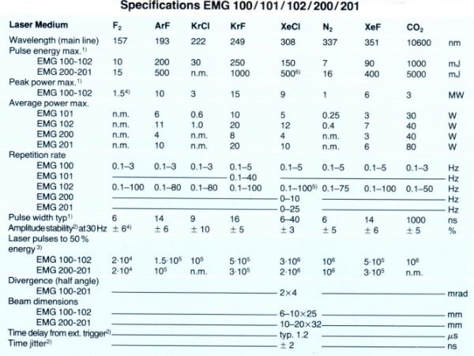
Les lasers à excimers sont devenus les lasers à gaz dans l'ultraviolet les plus importants ces dernières années. Dans le domaine commercial les lasers à excimer on fait des progrès impressionnants, car ils génèrent des puissances importantes de plusieurs centaines de watts et des taux de répétition dans le domaine du kilohertz! Un des avantage majeur est de produire une émission sans effet de speckle sur la pièce à traiter et une faible pénétration. Ces propriétes sont très importantes dans le traitement des cellules photovoltaiques et dans la lithographie UV. La grande énergie des photons à cette courte longueur d'onde permet d'initier des réactions chimique par un processus à photon unique.
En 1983 Lambda Physik à introduit le modele EMG 203 MSC qui est une amélioration importante pour la durée de vie et la fiabilité des lasers à excimers qui n'utilise plus de thyratron à hydrogène mais d'un système de compression de pulse magnétique. Les 2 composants présentant la durée de vie la plus faible sont le thyratron à hydrogène et les condensateurs haute tension. Avec le MSC (Magnetic Switch Control) qui est un élément passif la durée de vie des lasers excimer est portée à 5.109 pulses . Durée de vies des divers composants du laser: MAINTENANCE Optiques (miroirs) 5.108Optiques nettoyage (miroirs) 1.108 Electrodes 5.108 Changement du filtre halogène 5.108 Préioniseurs 5.108 Changement miroirs 5.108 HV power supply 1.109 Remplacement des électrodes 5.108 MSC 5.109
Il est intéressant de voir que 1 milliard de pulses correspond au fonctionnement du laser à 200 pulses par secondes durant 3 ans en travaillant 8 heures par jours !
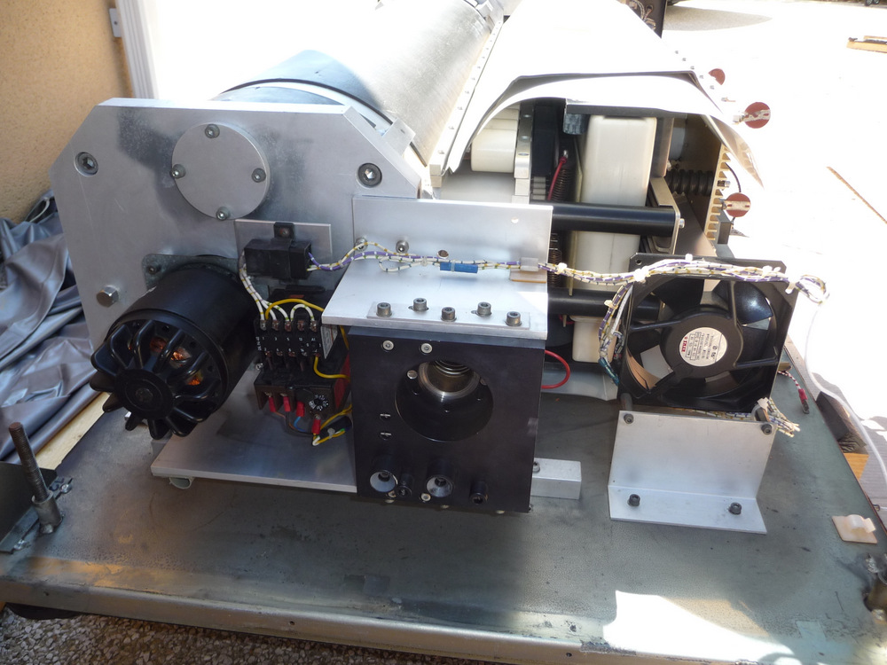
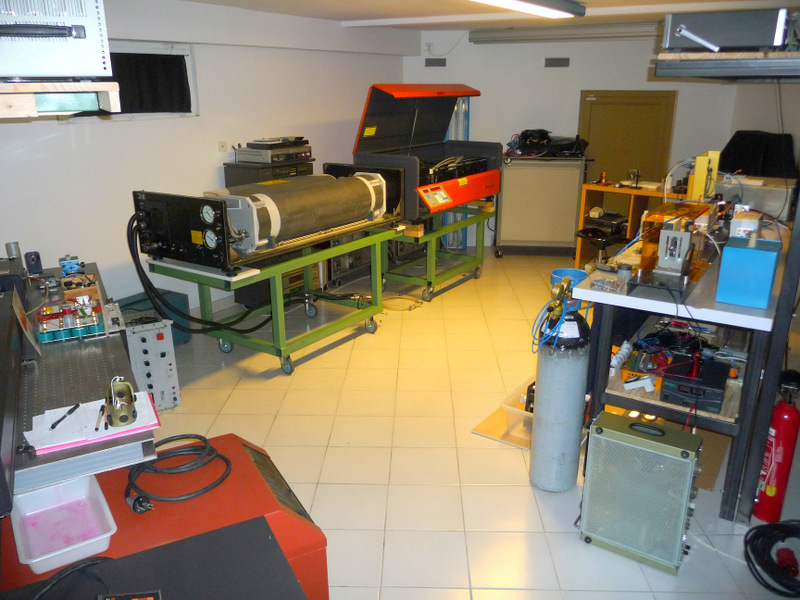
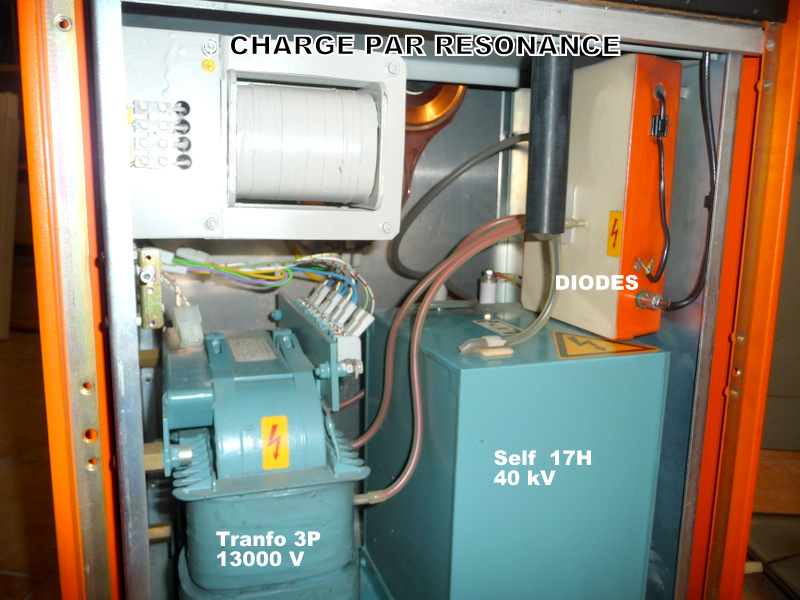
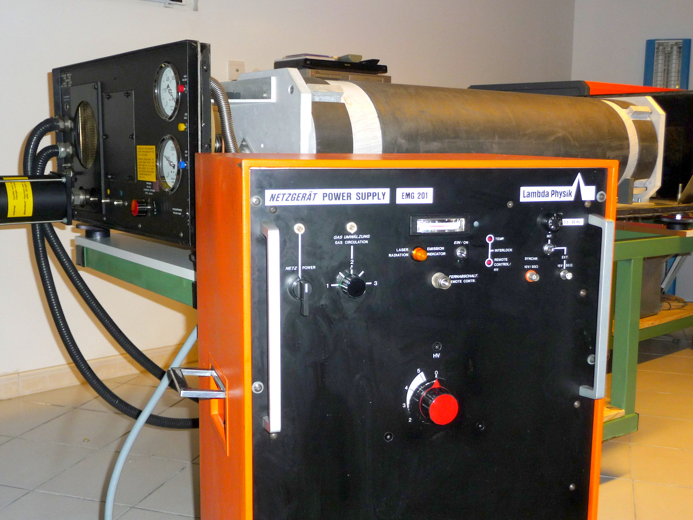
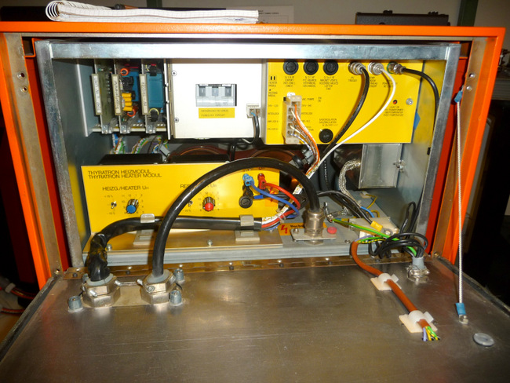
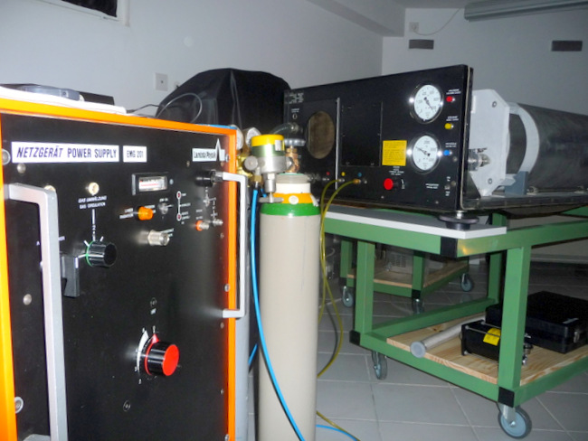
VIDEO EN HD
Préionisation des lasers excimers.
Pour obtenir une décharge homogène (glow discharge) il est nécessaire de créer dans le volume de gaz à excité des électrons libre entre 106 et 107 électrons/cm3 . La courbe (1) concerne une préionisation rayons X pour un laser XeCl et l'on voit clairement que l'énergie extraite de 4 J/L s'obtient avec 107 électrons/cm3 et même si l'on augmente le flux de préionisation on ne peut pas extraire plus d'énergie du laser XeCl. La courbe (3) concerne une préionisation par décharge de reptation de surface pour un laser KrF et ici l'énergie extraite est proportionnelle à la densité électronique entre 107 et 3.109 électrons/cm3 .
Avec de l'azote on peut extraire 50mJ / litre, avec XeCl 2000mJ / litre avec le KrF 4000mJ / litre et en CO2 20'000mJ / litre
Pour cela il existe 6 méthodes qui sont:
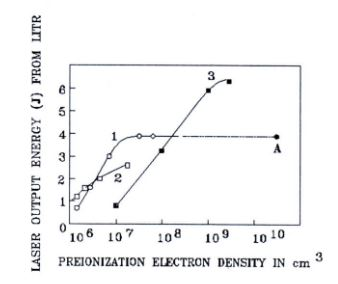
PREIONISATION CORONA
Pour les lasers excimers la préionisation corona sur une surface diélectrique est possible. Le système à fil du type Pearson-Lamberton n'est pas applicable pour des raisons d'arçage et de faible émissivité (convient au lasers CO2) La préionisation corona en surface est moins forte en émissivité que la préionisation par reptation de surface car il n'y a pas de formation d'arcs mais une décharge type "glow" a la surface du diélectrique qui peut être intégré sous une des électrode de décharge ou des 2 cotés adjacents des électrodes de décharges;
PREIONISATION PAR DECHARGE D'ARCS
La série de laser excimer EMG sont préionisés par des décharges d'arcs avant la décharge principale. En fait la capacité de stockage primaire charges les capacités secondaires à travers des selfs et des électrodes de préionisation qui produisent des arcs émettant un rayonnement UV permettant d'obtenir les électrons libres dans le gaz permettant une décharge homogène du milieu à pomper.
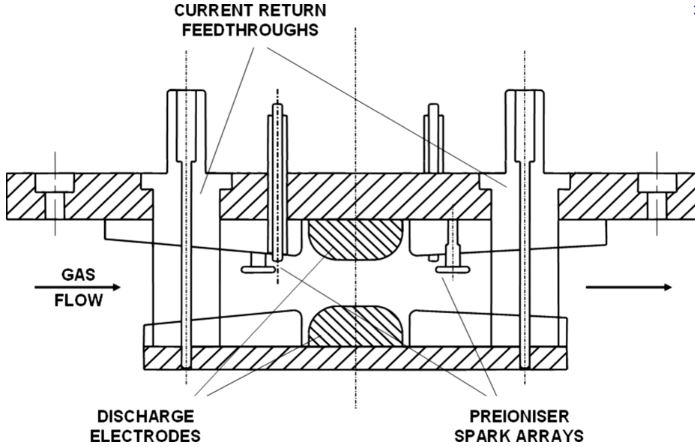
PREIONISATION XUV
Ce type de préionisation estle plus simple et utilisé dans le cas de pompage de volume moyen sur des gros lasers. Pour créer des arcs très chaud il est nécessaire de créer des décharges confinées dans un volume le plus petit que possible en un temps très court (moins d'une microseconde) avec une intensité de courant de 25-50kA ce qui produit un plasma de l'ordre de 60 à 100'000 0C donc une émission entre 150 et 100 nm
XRAY PREIONISATION
Ce type de préionisation estle plus complexe et utilisé dans le cas de pompage de grand volume sur des très gros lasers. Il se compose d'une cathode froide émettrice d'électrons qui sont accélérés sur l'anode par une tension de 80 à 150 kV, cette anode souvent un mince feuille de Tantale transforme l'énergie cinétique des électons en rayons X traversant celle-ci pour entré dans la cavité laser pour préionisé la gaz.
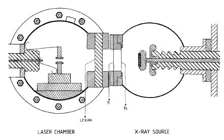
PREIONISATON PAR REPTATION DE SURFACE
Ce type de préionisation est le plus performant avec un rendement 10 fois supérieur au système à décharge d'arcs pour la même énergie injectée. L'émission donne des longueurs d'onde plus courtes car la température du plasma de la décharge filamentaire est plus élevée à la surface d'un diélectrique. Elle convient bien pour les lasers excimers KrF, ArF, XeF, F2 et les lasers TEA CO2
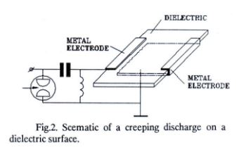
SANS PREIONISATION
Sans préionisation on peut obtenir une décharge homogène sous condition d'injecté une énergie par unité de volume de l'ordre de 10-20% de l'énergie maximum injectable avec une bonne préionisation et une autre condition est d'injecté cette énergie en un temps égale ou plus petit que la durée de vie radiative de la transition. Il faut également avoir des électrodes de décharge polies et parfaitement parallèles ( a quelques microns)
PREMIERE MISE EN MARCHE DU LASER EMG201
Pour cette première mise en service je vais travailler en "laser à azote" avec un mélange He-N2 . Avantage de travaillé avec de l'azote est que le mélange n'est pas couteux et non toxique et il permet de pomper les lasers à colorant. Le volume de l'enceinte laser (cavité de décharge + circulateur de gaz) est de 56 litres ! Le volume de décharge est de 30 x 13 x 750 mm3 soit un volume de 0.293 litre. La première chose après le contrôle au vide ( fuite de l'ordre de 1 torr/h) valeur tout à fait acceptable est de tirer au vide l'enceinte puis d'introduire 40 torr de N2 puis 1120 torr d'hélium 4.5 Ceci permettra de vérifier que le circuit de décharge (capacités, thyratron à hydrogène, système de circulation des gaz) fonctionnent bien.
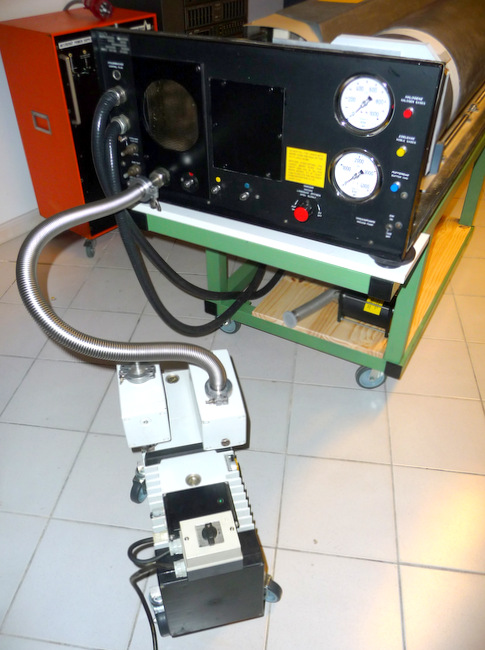
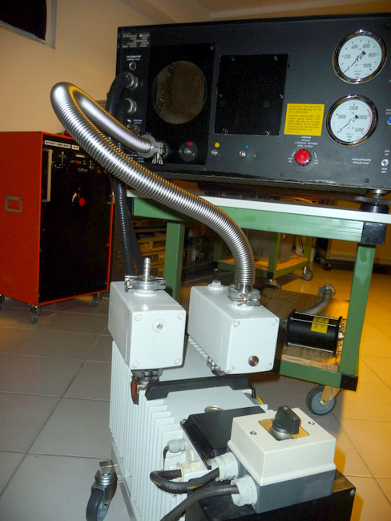
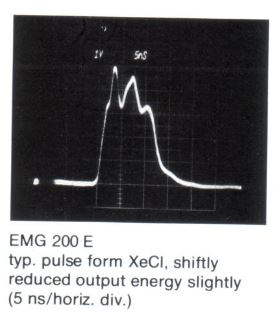
Les capacités de décharge sont au nombre de 44 de 1nF chargé à 35 kV soit une énergie de décharge de 26J en 10ns ce qui donne une puissance instantanée de 2.6GW!
Le courant de décharge est de 75 kA sous 35kV. Intensité de décharge dans le gaz est de 760 A/cm2
Ce laser utilisant un système de préionisation par étincelle l'on ne peut pas travailler uniquement avec de l'azote car on ne respecte pas E/P à pression atmosphérique et on ne peut pas travailler à 40 ou 60 torr car il y a des problèmes d'isolation entres électrodes de préionisations et électrodes de décharges. Le but sera également de faire des mesures d'énergie et de durée de pulses en fonction de différent mélanges He-N2 pour trouver l'optimum selon les applications.
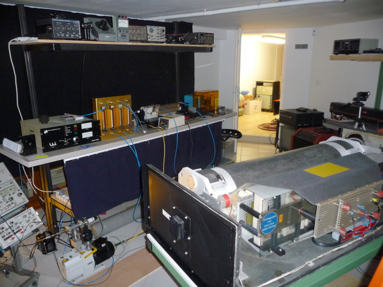
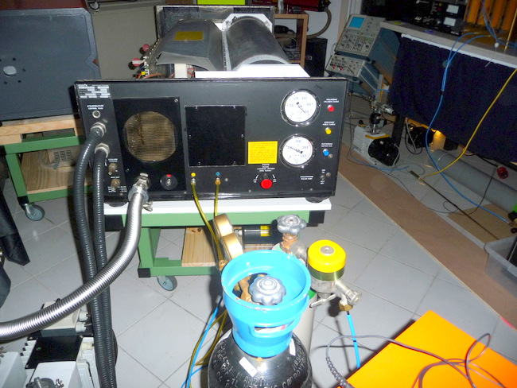
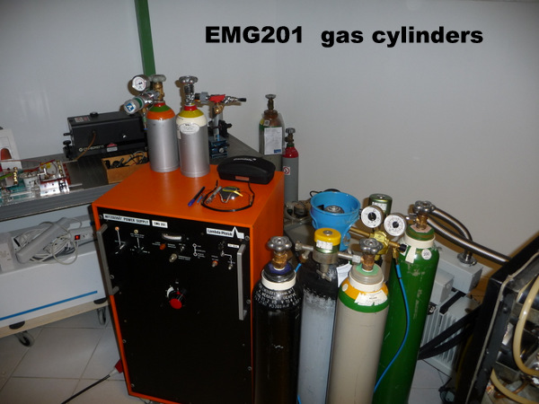
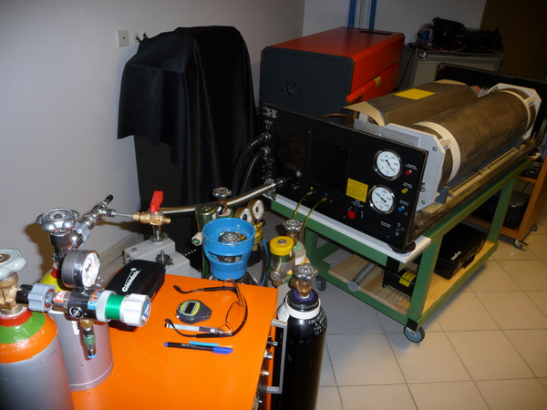
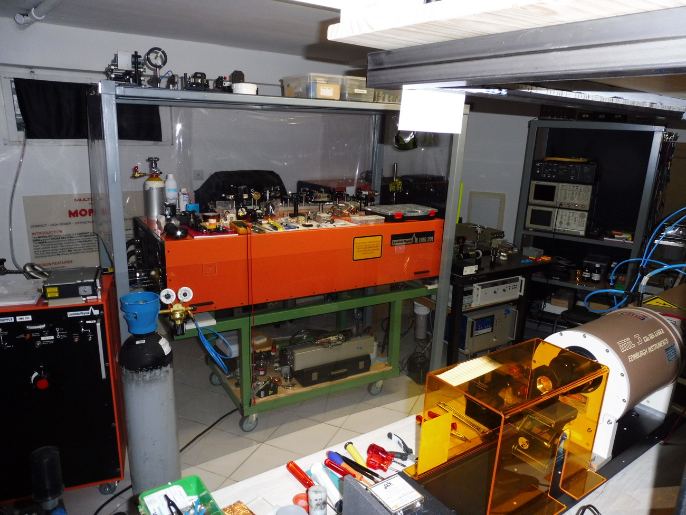
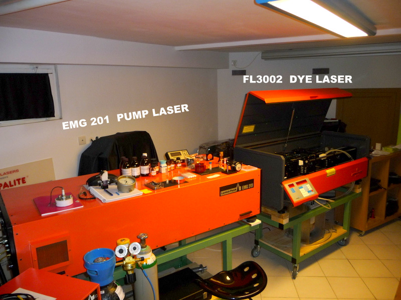
VIDEO EN HD
TRAVAIL AVEC LE LASER AVEC LE MELANGE EXCIMER
J'ai reçu après 6 mois d'attente la bouteille d'un mélange de 5% de chlorure d'hydrogène et 95% d'hélium ce qui me permet maintenant de faire fonctionner le laser en excimer XeCl ce qui produira un faisceau 38 fois plus énergétique (600mJ) qu'avec le mélange He-N2 (16mJ). Le prix de cette bouteille de gaz est de 960 euro et le détendeur en inox de 2400 euro pour le xénon la bouteille de 20L coûte 920 euro et la bouteille d'argon de 2000L est à 455 euro soit un total de plus de 4800 euro !
Pour cela il faut commencer à faire une passivation de la cavité lasers avec le mélange HCl-He en pompant au vide la cavité puis en laissant introduire le gaz jusqu'à une pression de 200mbar durant 10 minute en circulation interne. Le pompage au vide se fait à travers un filtre spécial de Lambda Physik contenant du charbon actif et des zéolithes. Puis on répète cette opération encore 2 fois avant d'introduire le xénon puis l'argon.
Le volume de gaz dans l'enceinte est de 56 litres de mélange gazeux soit 80 torr d'un mélange de 5% HCl et 95% He , de 60 torr de Xe, 1110 torr d'argon 99,995
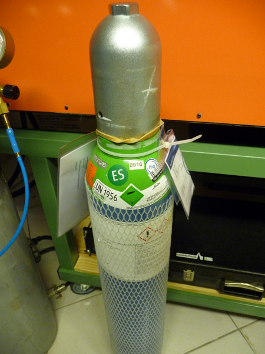
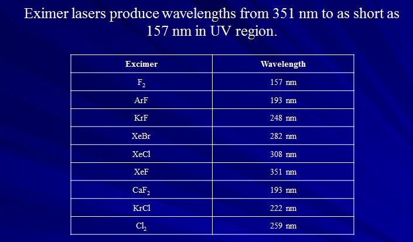
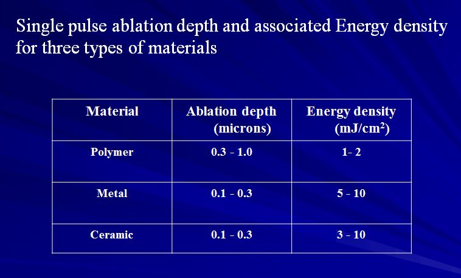
Avec cette photo du laser à Excimer géant PROMETHEUS j'aimerais montré la dimension physique d'un laser avec une énergie de 600mJ en 200fs @ 248nm par rapport
à mon laser EMG201 qui lui sort 1000mJ en 10ns @ 248nm !
Raccourcir la durée de pulse d'un facteur de 50'000 fois nécessite un e technologie complexe (élargissement de la raie spectrale de l'amplificateur obtenu par l'augmentation de la pression dans la cavité, gros volume d'excitation due à une section de faisceau nécessaire pour éviter la saturation, préionisation par rayon X, tension de décharge du Mégavolt en quelques nanoseconde) .